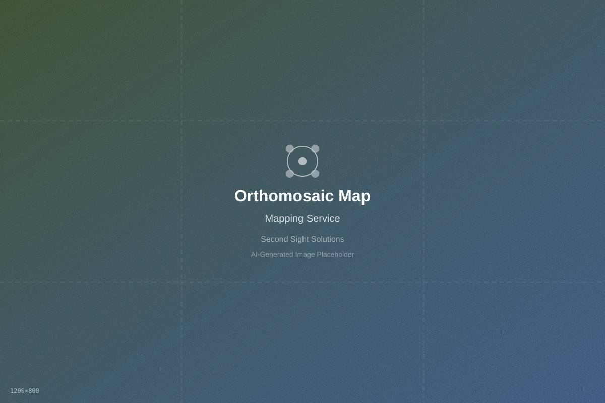
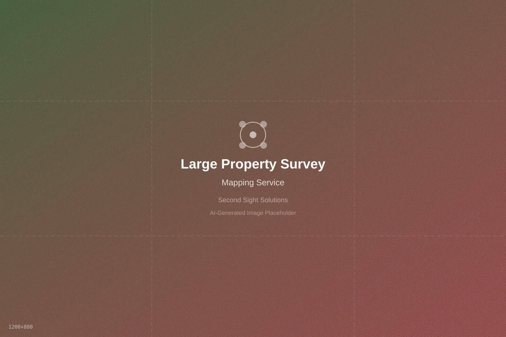
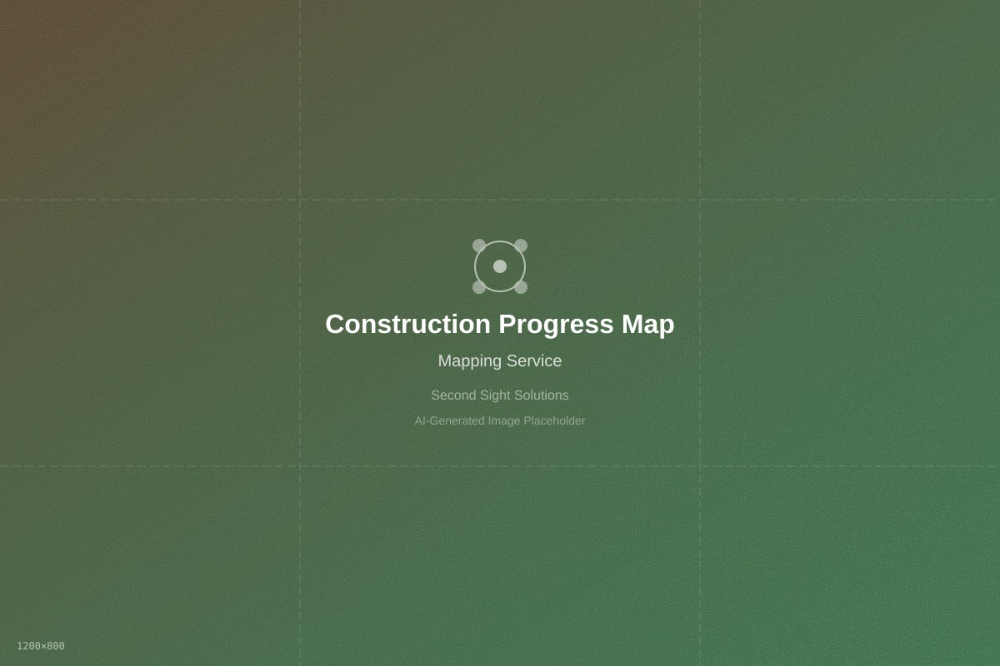
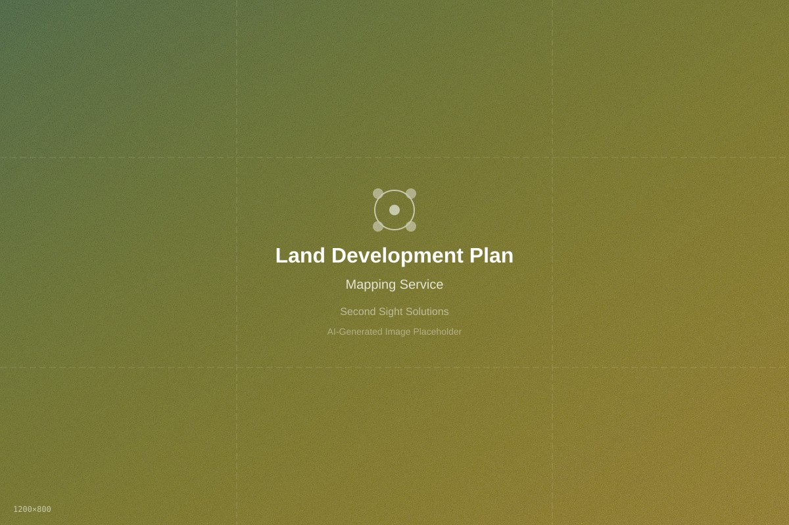
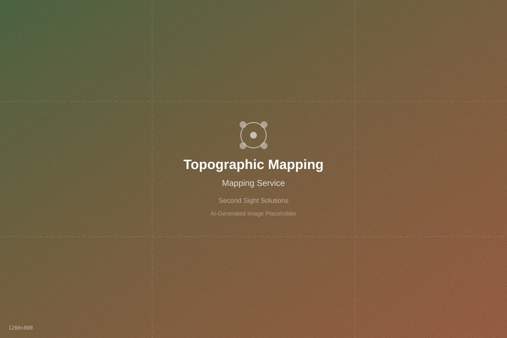
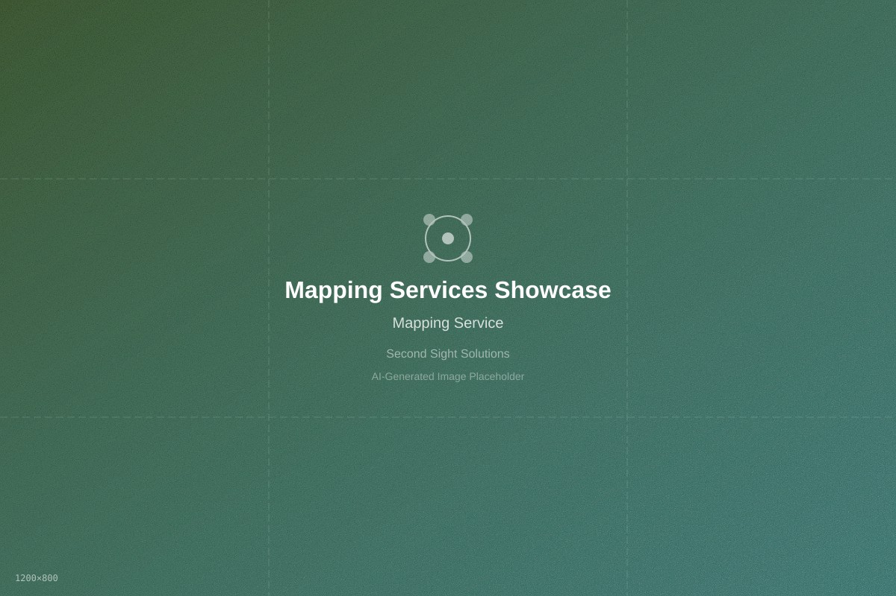

Drone Mapping & Orthomosaic Services in Central Texas
When you need a clean, top-down view of a site, mapping deliverables give you a reliable visual reference for planning, documentation, and communication.
Site Overhead Maps
Stitched, top-down imagery that provides a clear view of the entire property or job site.
- High detail coverage
- Great for progress tracking and planning
- Easy to share with stakeholders
Before / During / After Records
Repeatable capture supports consistent documentation across timelines.
- Construction and development tracking
- Land improvement documentation
- Organized deliverables by date
Site Visualization Support
Maps provide shared clarity for teams planning access, staging, and layout.
- Top-down context for decisions
- Clear view of site features
- Supports coordination and communication
What You’ll Receive
- Orthomosaic / top-down stitched map image (where applicable)
- High-resolution source images (if requested)
- Organized delivery in labeled folders
- Web-ready versions for sharing
Note: Deliverables and accuracy depend on project scope, site conditions, and requested outputs. If you need survey-grade results, tell us up front so we can plan appropriately.
Mapping & Surveying Portfolio Gallery
Examples of our professional aerial mapping work

Orthomosaic Site Map

Site Survey Mapping

Progress Tracking Map

Development Planning

Topographic Analysis
